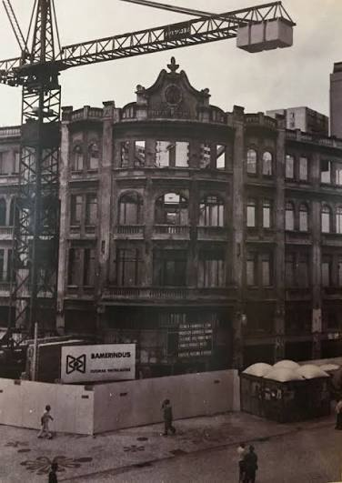
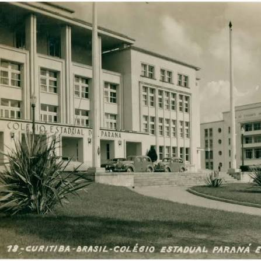
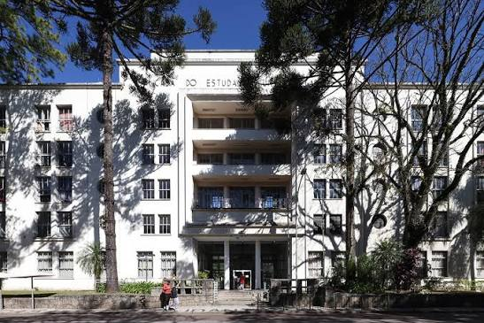

01 · Raízes
Origem e infância
Enedina nasceu em 13 de janeiro de 1913, em Curitiba, no Paraná, em um contexto de extrema vulnerabilidade socioeconômica e racial no início do século XX.
Era filha de Paulo Marques e Virgília Alves Marques (conhecida carinhosamente como Dona Duca, que trabalhava como lavadeira). Seus pais se separaram quando ela ainda era criança. Na década de 1920, sua mãe passou a trabalhar como empregada doméstica e lavadeira na residência da família do major e delegado Domingos Nascimento Sobrinho.
Percebendo o grande potencial intelectual de Enedina, a família empregadora integrou-a às aulas particulares pagas para fazer companhia à filha do casal, Isabel (apelidada de "Bebeca"). Essa oportunidade foi decisiva para que Enedina iniciasse e consolidasse sua trajetória escolar formal.
Contexto histórico e documentação familiar: Enedina nasceu apenas 25 anos após a abolição formal da escravidão no Brasil (1888). Não existem registros fotográficos públicos ou oficiais preservados de seus pais (Dona Duca e Paulo Marques) nos acervos estaduais.
02 · Educação
O caminho até a engenharia
Antes de ingressar no ensino superior, Enedina diplomou-se como professora primária na Escola Normal (1927–1931). Atuou no magistério e alfabetização em diversas cidades do interior paranaense — como Rio Negro, São Mateus do Sul, Cerro Azul e Campo Largo —, além de Curitiba, enquanto continuava seus estudos de forma incansável.
Na segunda metade da década de 1930, para viabilizar sua preparação pré-universitária, Enedina residiu com a família Caron no bairro Juvevê e cursou os estudos complementares no tradicional Ginásio Paranaense (no turno noturno).
| Ano | Etapa da trajetória |
|---|
| 1927–1931 | Ingresso e conclusão da formação na Escola Normal de Curitiba. |
| 1932–1937 | Atuação como professora primária no interior (Rio Negro, São Mateus do Sul, Cerro Azul, Campo Largo) e na capital. |
| 1938 | Curso complementar e de pré-Engenharia no Ginásio Paranaense (noturno), residindo no Juvevê. |
| 1940 | Ingresso na Faculdade de Engenharia da Universidade do Paraná (atual UFPR). |
| 1945 | Conclusão da graduação em Engenharia Civil aos 32 anos; formatura no Palácio Avenida com paraninfo prof. João Moreira Garcez. |
Em 1945, Enedina graduou-se em Engenharia Civil e entrou para a história como a primeira mulher negra a se formar engenheira no Brasil e a primeira mulher engenheira do estado do Paraná. A solenidade ocorreu no histórico Palácio Avenida, em Curitiba, tendo como paraninfo da turma o professor João Moreira Garcez.

Fotografia Real: Palácio Avenida (Curitiba/PR) — Edifício histórico onde ocorreu a solenidade oficial de diplomação da turma de Engenharia de 1945.
03 · Atuação profissional
Uma engenheira no serviço público e nas grandes obras
Logo após a formatura, Enedina ingressou no serviço público estadual como auxiliar de engenharia na Secretaria de Estado de Viação e Obras Públicas (1946). Em 1947, foi transferida pelo governador Moisés Lupion para o Departamento Estadual de Águas e Energia Elétrica do Paraná, assumindo responsabilidades técnicas centrais no desenvolvimento do estado.
Infraestrutura energética
Usina Capivari–Cachoeira
Enedina teve papel fundamental no Plano Hidrelétrico do Paraná, integrando o planejamento técnico, cálculos hídricos e fiscalização de obras da Usina Capivari-Cachoeira — a maior usina subterrânea do sul do Brasil (atualmente Usina Governador Pedro Viriato Parigot de Souza).
Edifícios emblemáticos
Colégio Estadual & CEU
Participou dos projetos e execuções estruturais do Colégio Estadual do Paraná (projetando a rede hidráulica do edifício inaugurado em 1950) e da Casa do Estudante Universitário de Curitiba (CEU).
Gestão e Liderança
Chefias Técnicas
Ocupou cargos de alta relevância, exercendo as funções de chefe de hidráulica e chefe da divisão de estatísticas na Secretaria de Educação e Cultura do Paraná.
Rigor e Planejamento
Serviços de Engenharia
Atuou em levantamentos topográficos, pesquisas hídricas e mapeamentos de infraestrutura que fundamentaram a expansão urbana e energética paranaense.

Fotografia Real: Colégio Estadual do Paraná (CEP) em Curitiba — Obra pública que teve seu projeto hídrico e hidráulico elaborado por Enedina.

Fotografia Real: Casa do Estudante Universitário do Paraná (CEU) — Edificação emblemática em Curitiba acompanhada por Enedina.
A engenharia de grandes obras é resultado do trabalho de equipes multidisciplinares. Destacar o papel de Enedina valoriza sua competência técnica e liderança em projetos estratégicos do Paraná.
04 · Sociedade
Racismo, machismo e autoridade profissional nos canteiros
Enedina construiu sua carreira em um meio predominantemente branco e masculino. Como mulher negra no comando de obras de infraestrutura, precisou enfrentar preconceitos velados e diretos para impor sua autoridade técnica.
Para liderar dezenas de operários e técnicos em canteiros de obras exigentes, aliou um rigor técnico implacável a uma postura firme. Registros biográficos relatam que utilizava macacões de trabalho, botas e carregava uma arma na cintura — símbolos de proteção física e afirmação de liderança perante a hostilidade do ambiente.
“Sua presença na engenharia rompeu barreiras históricas e redefiniu o espaço ocupado por mulheres negras na ciência e na infraestrutura brasileira.”
Esses relatos refletem a firmeza necessária para exercer o comando em um contexto de machismo e racismo estruturais, sem nunca ofuscar sua excelência técnica como engenheira civil.
05 · Memória, vida pessoal e reconhecimento
O legado, a independência e o resgate da memória
O valor histórico de Enedina foi reconhecido ainda em vida por expoentes do pensamento social brasileiro. Em 1961, o célebre sociólogo Octávio Ianni entrevistou Enedina para a pesquisa financiada pela UNESCO que resultou na obra histórica As Metamorfoses do Escravo.
Em 1962, ao se aposentar do serviço público estadual após décadas de dedicação, o governador Ney Braga concedeu-lhe aposentadoria especial com equiparação salarial ao cargo de juiz, em reconhecimento oficial ao seu pioneirismo e serviços prestados ao Paraná.
Vida pessoal, autonomia e o contexto de não ter se casado
Conforme consta nos registros oficiais e levantamentos biográficos (como as pesquisas do historiador Jorge Luiz Santana), Enedina nunca se casou, não teve filhos e não possuía parentes próximos no final da vida. Embora não tenha deixado diários ou declarações íntimas explicando um motivo único para essa escolha, a historiografia e a sociologia apontam três fatores centrais de sua época:
- Dedicação integral à formação e ao trabalho: Sob o Código Civil de 1916 (vigente durante toda a sua vida adulta), o casamento impunha restrições legais à autonomia profissional da mulher. Enedina priorizou os estudos, o magistério e a carreira na engenharia pública.
- Isolamento racial e de classe ("solidão da mulher negra"): Estudos sociológicos sobre mulheres negras pioneiras no Brasil mostram que aquelas que ascendiam intelectual e profissionalmente enfrentavam barreiras afetivas duplas — rejeição pelas elites brancas devido ao racismo estrutural e distanciamento de seu círculo social de origem pela mobilidade educacional.
- Independência financeira e pessoal: Com carreira consolidada e aposentadoria especial, viveu de forma autônoma em seu próprio apartamento no Centro de Curitiba.
Falecimento e a reação contra o apagamento na imprensa (1981)
Enedina faleceu em agosto de 1981, aos 68 anos, vítima de um infarto em seu apartamento localizado na Rua Ermelino de Leão, no Centro de Curitiba. Seu corpo foi encontrado no dia 27 de agosto (data registrada no atestado de óbito), mas, devido ao estado de decomposição, estima-se que a morte tenha ocorrido cerca de uma semana antes, por volta do dia 20 de agosto.
Na ocasião, o tabloide local Diário Popular noticiou o ocorrido retratando-a de forma reducionista como apenas uma "idosa excêntrica", ignorando sua trajetória histórica. A reportagem gerou imediata indignação entre os membros do Instituto de Engenharia do Paraná (IEP), que se mobilizaram e publicaram artigos na imprensa ressaltando sua relevância técnica e pioneirismo na engenharia brasileira.
Pesquisa Sociológica
UNESCO & Octávio Ianni
Entrevistada em 1961 para o estudo clássico sobre a integração do negro na sociedade de classes (As Metamorfoses do Escravo).
Direitos e Reconhecimento
Aposentadoria Especial (1962)
Concedida no governo Ney Braga, garantindo proventos equiparados aos de um juiz de direito por seus méritos técnicos.
Memória Pública
Homenagens e Institutos
Nome de rua em Curitiba, inclusão no Memorial à Mulher (2000) e criação do Instituto de Mulheres Negras Enedina Alves Marques em Maringá (2006).
Ciência Nacional
Reconhecimento MCTI
O Ministério da Ciência, Tecnologia e Inovação instituiu o Reconhecimento Enedina Alves Marques para homenagear mulheres inovadoras na ciência.
06 · Cultura e Letramento Digital
Os "Algoritmos da Memória" e o combate ao apagamento
O episódio da cobertura superficial de sua morte em 1981 ilustra como o nome de Enedina Alves Marques foi marginalizado da historiografia oficial por décadas.
No ambiente digital e nos motores de busca, ferramentas de inteligência artificial e algoritmos historicamente refletiam a sub-representação de mulheres e cientistas negras. O resgate recente da história de Enedina — impulsionado pela reação histórica do Instituto de Engenharia do Paraná, campanhas institucionais, pesquisas acadêmicas e homenagens digitais globais (como o Google Doodle) — exemplifica o papel do letramento digital e da justiça histórica na reescrita dos dados da ciência brasileira.
07 · Cronologia
Linha do tempo expandida
1913
NascimentoNasce em Curitiba (PR), em 13 de janeiro, filha de Paulo Marques e Virgília Alves Marques (Dona Duca).
1927–1931
Formação NormalistaIngressa e conclui o curso da Escola Normal de Curitiba.
1932–1937
Magistério no InteriorLeciona como professora primária em Rio Negro, São Mateus do Sul, Cerro Azul, Campo Largo e Curitiba.
1938
Preparação Pré-UniversitáriaRealiza curso de pré-engenharia no Ginásio Paranaense (noturno), residindo com a família Caron no Juvevê.
1940
Ingresso na UniversidadeIngressa na Faculdade de Engenharia da Universidade do Paraná (UFPR).
1945
Diploma de Engenharia CivilForma-se aos 32 anos no Palácio Avenida, tornando-se a primeira mulher negra engenheira do Brasil e a 1ª do Paraná.
1946–1947
Serviço Público e TransferênciaAtua na Secretaria de Viação e é transferida pelo governador Moisés Lupion para o Depto. de Águas e Energia Elétrica.
1950–1955
Grandes Obras de InfraestruturaAtua nos cálculos e fiscalização de Capivari-Cachoeira, no Colégio Estadual do Paraná e na Casa do Estudante (CEU).
1961
Entrevista com Octávio IanniEntrevistada para a pesquisa da UNESCO publicada no livro As Metamorfoses do Escravo.
1962
Aposentadoria EspecialAposenta-se no governo Ney Braga com equiparação salarial de juiz de direito.
1981
Falecimento e Mobilização do IEPMorre aos 68 anos, vítima de infarto em seu apartamento no Centro de Curitiba (óbito estimado em 20 de agosto e registrado em 27 de agosto). Após nota reducionista do jornal Diário Popular, o Instituto de Engenharia do Paraná mobiliza a imprensa para resgatar seus feitos.
2000–2006
Resgate InstitucionalHomenageada no Memorial à Mulher (2000) e criação do Instituto de Mulheres Negras Enedina Alves Marques em Maringá (2006).
08 · Recursos Complementares
Apresentação em Slides e Documentário
Acesse o material de apresentação elaborado pelo grupo e aprofunde seus estudos através do conteúdo audiovisual oficial no YouTube.